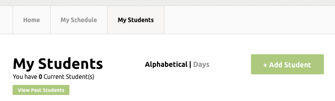

Once you have signed up you find yourself on Trillo's homepage. There isn't a lot here yet, but that's because you don't have any students set up! We designed Trillo with the student as the center, so creating some is your first step.
You may have a lot of students - if that is the case we recommend you start by setting up tomorrow's students. Then you can use Trillo tomorrow to manage your daily schedule, then add the next day's students, and repeat. To start click on the 'My Students' link in the navigation bar, then on 'Add Student'
The initial new student page has only the basic information needed for each student.
1- First, Last name, their grade, the city or town they live in
2- A longer field to enter any specific information about the child (peanut allergy, etc.)
3- A field where you can overide the default billing (which you will set up later. $50/lesson is just the system default.)
4- A default avatar is set for the student, and you can set up their lesson start and end time.
Underneath the lesson time dropdowns is a checkbox that says 'Add to Existing Account' If this student has a sibling who has already been added to the system, then check this box and choose the family name from the dropdown that appears. That links the students for Family Billing.
Adding the student will take you to their details page. The next step is to add one or more contacts for the student. Click the 'Add Contact' button.
You can add as many contacts per student as you need. Each contact can have different addresses and phone numbers to handle different family situations. You can also check off whether the contact should receive the lesson notes and the invoices.
This is an example of how your homescreen will look when you have students entered and scheduled for lessons that day.
Clicking on a student will bring up the lesson reconciliation page, where you can record lesson notes.
The is the lesson details page. From here you can:
Finally you mark the lesson as Complete or Missed. Any private notes and emails are saved and sent at this time.
There is a lot more to Trillo, but if you have gotten to this point you are off to a good start. We are continuing to build out the support section of our website, but in the meantime here is how you can get help.
This number is forwarded directly to our founder's cell phone.
There is a little mail icon in the lower right side of every page. Click on it and you can send us a message. We'll get right back to you!